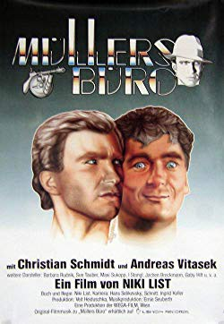

IMDB-Wertung: 6.9 / 10
IMDB-Wertung: 6.9 / 10  Metascore:
Metascore: 
Private detective Max Müller and his assistent Larry try to solve a crime but find themselves in strange bars and women.
 IMDB-Wertung: 6.9 / 10 Metascore:
Private detective Max Müller and his assistent Larry try to solve a crime but find themselves in strange bars and women.
Jahr: 1986
Dauer: 100 Minuten
FSK: 16
Land: Österreich Studio: Kinowelt Home EntertainmentTonspuren:
Untertitel:
Auflösung: 1080p (1920x1080) Größe: 7833 MB
Genre: Komödie, Krimi, Musical
Regisseur: Niki List, Hans Selikovsky
Drehbuch: Niki List
Soundtrack: Freddy Gigele, Peter Janda, Lothar Scherpe, Ernie Seubert
Darsteller:
 Barbara Rudnik als Bettina Kant
Barbara Rudnik als Bettina KantDatei: X:\1986\Müllers Büro (1986, FSK16, 1920x1080).mkv seit 22.02.2019
Festplatte: HD 1980-1986
 Es gibt insgesamt 50 Filme in der Gruppe '1986'
Es gibt insgesamt 50 Filme in der Gruppe '1986'